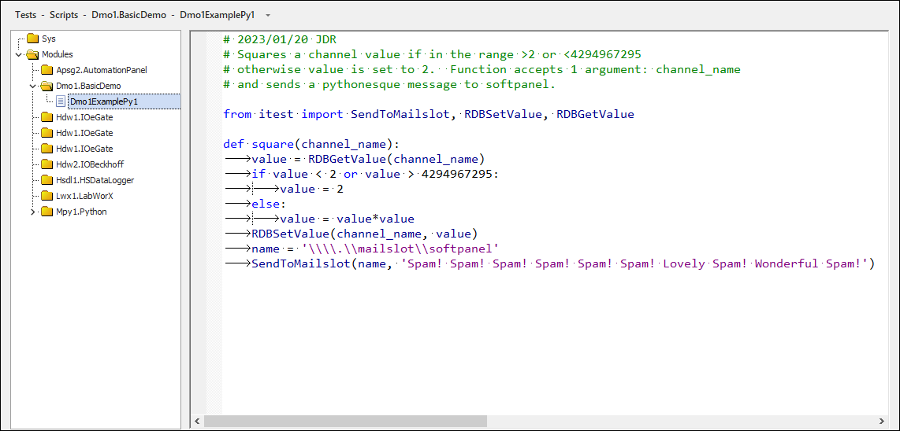
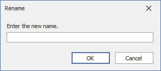
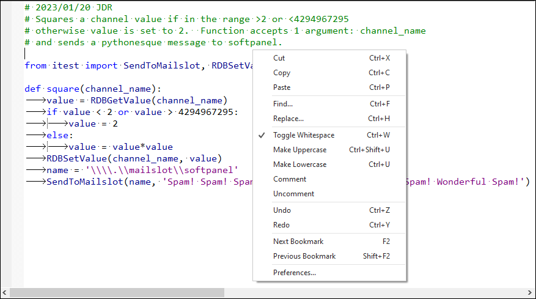
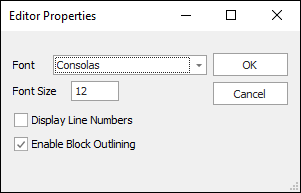
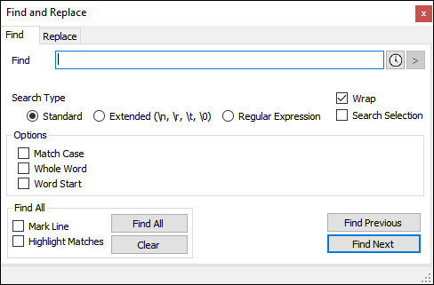

iTest User's Guide
You can create custom Python scripts using SolutionBuilder's Scripts editor. These scripts can be stored in either the system support directory ($SUPPORTDIR) or module folders. For more information on using Python in iTest, reference the Automating iTest With Python documentation.
The Scripts editor can be accessed in SolutionBuilder by selecting Tests > Scripts from the main menu.
Scripts Editor

The following options are available when you right-click a script in the left pane:
Scripts Right-Click Menu
Scripts Right-Click Options
| Option | Description |
| Add | Adds a new script. |
| Remove | Removes a selected script. |
| Rename... | Launches the Rename dialog to change the name of the script. |
| Duplicate | Duplicates a selected script and appends a numeric value to the name of the script (e.g., UserFileName3). |
| Cut | Removes a script and copies it to the clipboard. |
| Copy | Copies a script. |
| Paste | Pastes a copied/cut script. |
| Undo | Undoes the last action. |
| Redo | Redoes the last undone action. |
To create a new script, do the following:
Right-click in the left located menu and select Add. A new script will appear with a default name. To rename the new script, right-click and select Rename. This will launch the Rename dialog.
Rename Dialog

Enter a new name for your script and click OK.
The following options are available when you right-click in the scripts editor:
Right-Click Editor Options

Right-Click Editor Options
| Option | Description |
| Toggle Whitespace | When selected, white space is identified in the editor. |
| Make Uppercase | Changes the selected text to uppercase letters. |
| Make Lowercase | Changes the selected text to lowercase letters. |
| Comment | Comments the selected line. |
| Uncomment | Uncomments the selected line. |
| Next Bookmark | Navigates to the next bookmarked line set by clicking the line in the left-side margin. |
| Previous Bookmark | Navigates to the previous bookmarked line set by clicking the line in the left-side margin. |
| Preferences | Launches the Editor Properties Dialog. |
Use the following table to set your preferences for the scripts editor:
Editor Properties Dialog

Editor Properties Dialog Options
| Option | Description |
| Font | Sets the font type used in the scripts editor. |
| Font Size | Sets the font size used in the scripts editor. |
| Display Line Numbers | When selected, line numbers will appear in the left-side margin. |
| Enable Block Outlining | When selected, a tree node will appear in the scripts editor. |
You can use the Find and Replace dialog to search for text in your scripts, or you can search and replace text as necessary. To open this dialog, use the keyboard shortcut combination CTRL + F or CTRL + H.
Find and Replace Dialog
